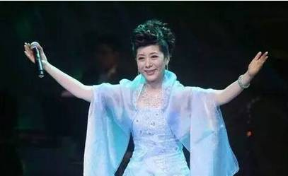
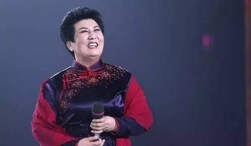
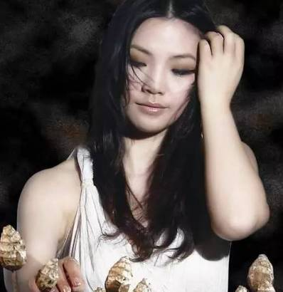

小课堂|好听的女中音会让人上瘾，聆听经典歌曲朱韬（女中音歌唱家，抖音号：90786575582）
女中音总是能制造一种温柔伤感，这是一种音色稀少，可轻易接近灵魂介质的声音。低沉，浑厚，委婉妩媚而动人心弦的中音是稀世珍品，能抚慰听者的心灵，让人痴迷和向往。
今天“声乐歌唱家”和大家介绍女中音的经典歌曲。
降央卓玛

降央卓玛，她的名字在藏语中意寓“传说中的妙音仙女”;她的声音被赋予“天下最美的女中音”的含义。这位年轻的歌手，能把人们的心灵折服，淳朴自然的风格、浑然天成的唱腔，收放自如的高低音，清净辽阔，空灵且极具穿透力。
关牧村

关牧村的代表作《打起手鼓唱起歌》、《祝酒歌》、《吐鲁番的葡萄熟了》等蜚声中外，其极富特色的女中音浑厚而富有磁性，饱含深情的演唱风格也受到观众的热情评价和高度赞扬。

罗天婵
0 1
罗天婵《打起手鼓唱起歌》
罗天婵是我国歌坛上深受广大听众欢迎的新中国第一位杰出的抒情女中音歌唱家，原中央乐团（中国国家交响乐团）国家一级（歌唱）演员，是毛泽东时代杰出的文艺战士，受到过周总理极高的艺术赞誉。凡是听过罗天婵演唱的人，都会感觉到她的歌声里有着一种少有的艺术魅力。
德德玛
德德玛，中国蒙古族女中音歌唱家。1947年出生在内蒙古额齐纳旗。1978年，德德玛以《美丽的草原我的家》受到歌唱界的极大关注。德德玛的演唱声音浑厚醇美，音域宽阔，气息通畅，演唱富于激情，具有强烈的艺术感染力。她的歌路十分宽广，既善于演唱蒙古族调民歌，又能演唱大型艺术歌曲，西洋歌剧咏叹调。经过长期探索，使蒙古族长调唱法与美声唱法相结合，融为一体，在民族声乐领域内独对一帜，走出一条成功的道路。

徐小凤
徐小凤，香港殿堂级歌手，其声音不高亢不激越，平稳中带极强的穿透力，不暗哑不滞重，浑厚中带深沉古典，无论是欢快的《卖汤圆》，或是略带伤感的《留下眼泪前》，还是诠释人生、励志的《顺流逆流》，徐小凤的歌曲都会成为家喻户晓、茶余饭后的经典佳作，不论老女老少，都会哼唱。即使在21世纪，她的歌曲依然无可替代，徐小凤是女中音界永恒的辉煌。主要歌曲还有：《心恋》
朱韬（抖音号：90786575582）
朱韬，女，汉族，女中音歌唱家，中国音乐学院歌剧系本科毕业，北京大学艺术学院首届艺术硕士，中央民族歌舞团声乐演员。1999年参演毕业歌剧《费加罗的婚礼》饰演凯鲁比诺，2002年获第十届‘哈药六杯’CCTV青年歌手电视大奖赛专业美声组优秀奖。2003年在歌剧《江姐》中饰演双枪老太婆。2009年先后在歌剧《青春之歌》中饰白丽萍、《再别康桥》中饰陆小曼。2010年2月国家大剧院举行《中国咏叹》新年音乐会，5月连续出演三场国家大剧院首部小歌剧《贾尼·斯基基》饰ZITA。2011年出演歌剧《小二黑结婚》宋媒婆，获郭兰英等专家好评，同年于歌剧《宋庆龄》中分饰宋母和李姐。 [4]代表作品包括《夏日阳光》《吐鲁番的葡萄熟了》《草原夜色美》《大道无垠》等。
朱韬的歌唱以极具磁性的抒情见长，最大的特点就是善于用情，表演与歌唱融为一体，她的音色甜美柔暖，音质纯净清亮，音域宽广流畅，时而高亢华丽，时而饱满低沉，她的胸腔共鸣丰满结实，演唱行腔委婉而又劲道 ，声音穿透力强，情真意切，韵味真醇，她吐字清晰却又不影响音型和共鸣，语法讲究而富有韵律感，丰富的音色变化更增添了歌声的感染力,做到了声音色彩的多样化。
蔡琴
蔡琴，台湾流行乐坛的重量级人物，其作品《恰似你的温柔》经久不衰，《被遗忘的时光》《抉择》不断被翻唱，成为k房的必选之歌。蔡琴的声音豪迈、古典，亦刚亦柔，波澜不惊，优雅中带伤感，古典中带醇美，摄人心魄。清澈纯净的声音配合悠扬悦耳的音乐，如天籁般引人入胜，让人无法自拔。蔡琴是古典与浪漫的结合体。

潘秀琼
潘秀琼，比白光、周璇、李香兰、姚莉晚半代的著名女中音，凭借其富有磁性而醇厚宽广，委婉柔和而空灵的声音，成为当时唯一一位能够挤入香港乐坛且长期灌区的歌手。其《家家有本难念的经》《情人的眼泪》传遍大街小巷，成为风靡多时的璀璨明星，对流行女中音界具开启性的重要意义。
梅艳芳
香港歌手梅艳芳，给人以多变的形象，无论歌坛影坛，都有其影子。梅艳芳的声音虽不及徐小凤宽厚，却依然感染力十足，其声音柔媚、纯净，让人即使陷入扑朔迷离的徘徊困境时，也会不知不觉陶醉其中。梅艳芳以其独特的韵味和华丽多变的形象，成为潮流的风向标，是香港八十年代最红，最有代表性的女中音歌手。
莫文蔚
莫文蔚的慵懒烟嗓与国际化的音乐视野让她在华语乐坛独树一帜。2025年，她作为《歌手2025》的首发嘉宾，带来了经典的《阴天》与《这世界那么多人》，引发了大众的集体怀旧。她在音乐剧领域的创作也取得了显著成绩，《时光旅行者》的全球巡演票房突破纪录，成为跨世代的舞台艺术家。
郭燕
“黑胶小天后”郭燕，声音圆润淳朴，不矫揉造作，不盛世凌人。她每一个发音都紧紧牵引着你的呼吸，同时又带有强大的穿透力，附着于你的灵魂，牵起你对过往千丝万缕记忆的回想，却又抚慰着你的心灵，让你释怀与淡然。其代表作《雁归来》《天空之城》《遇，不见》《花语》，歌曲中诠释着不同的爱情故事，听来就像酌一杯美酒，芬芳醇厚，朦胧间触动你心底最柔软的角落，令人迷醉。

刘子琪
刘子琪，中共党员，著名军旅歌唱家，中国武警总部政治部文工团青年歌唱演员。战友们亲切地称呼“兵妹妹”。中国人民武装警察部队政治工作部文工团青年女中音歌唱家。意大利贝利尼国际声乐比赛评委，国际艺术家音乐比赛评委，曾荣获“亚洲青年歌唱家大赛”一等奖（总冠军），被美洲、欧洲、亚洲的音乐界赞誉为“最纯朴女中音”。刘子琪性情自然平静、纯朴豁达、赏心悦目的美丽、如酒醇香的气息。有着同龄人中很难捕捉的质朴与真诚。辽阔纯朴的女中音，浑厚醇美的歌声。有着明星难见的亲切与自然。刘子琪，有一种柔性的勇敢，有一种温暖的魅力。
结语：好听的女中音会让人慢慢上瘾，让人深陷其中并且无法自拔。中音的世界是唯美的。